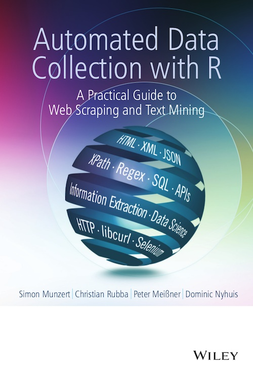

 The rapid growth of the World Wide Web has opened many opportunities in collecting, sharing and publishing data of all kinds. This book shows how to collect and post-process this data with the most popular and easy to use statistical programming language R. It provides a hands-on guide to web scraping and text mining for both beginners and experienced users, featuring examples throughout that explain each of the techniques presented. Fundamental concepts of the main architecture of the Web and databases are discussed along with coverage of HTTP, HTML, XML, JSON, JavaScript and SQL.
Visit our blog to read more about all things data collection with R. We post regularly on text manipulation, databases, Web technologies, Web Scraping, and further topics. In R, of course. We also tweet regularly under RDataCollection on a wide spectrum of R and data collection specific topics.